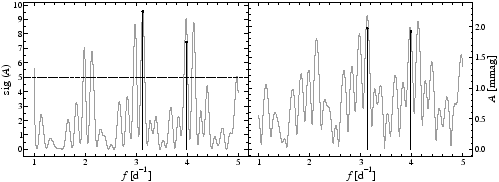

The frequency where the computation of spectra starts is specified by the keyword lfreq. By default, the lower frequency limit is zero.
Example. The sample project limits illustrates the use of the keyword lfreq. It uses the V photometry of IC4996#89 as input file limits.dat, and the file limits.ini contains the line
lfreq 1
which forces SIGSPEC to perform all computations for frequencies 1 cycle per day. The spectrum limits/s000000.dat is displayed in Fig.7.

Piet Reegen
2009-09-23